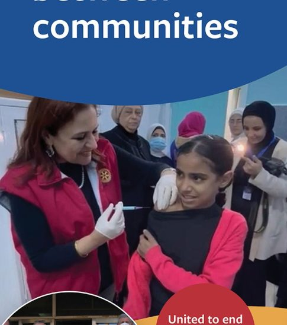

Home / Service projects

Many health professionals still work in hospitals and clinics without basic diagnostic tools and provisions – sometimes even without reliable electricity and water.
Every day many patients receive medical care which itself may cause harm. WHO estimates that 4 out of 10 patients are harmed in care; upto 80% are preventable.
We’ve a vision of a world where everyone has access to good and safe healthcare, and no one is harmed in health care.
Each donations matter, even the smallest ones. Donate $2( average price of coffee in the USA) and someone’s life will get better!